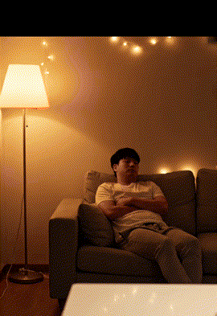
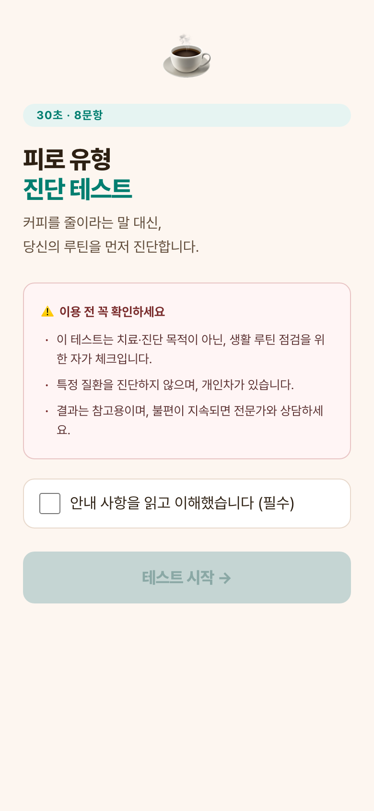
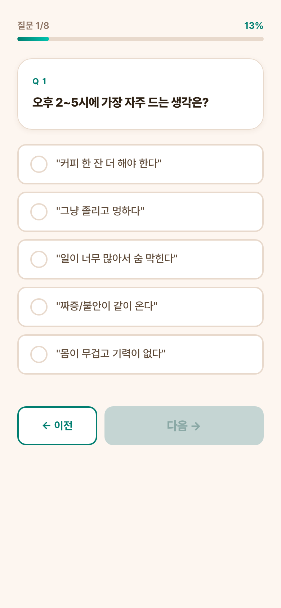
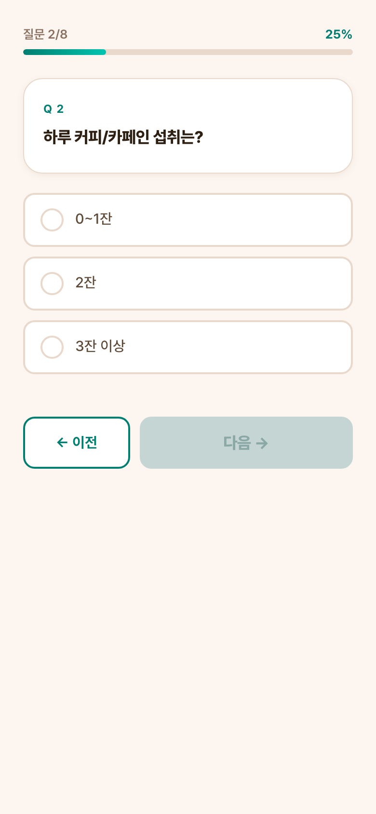
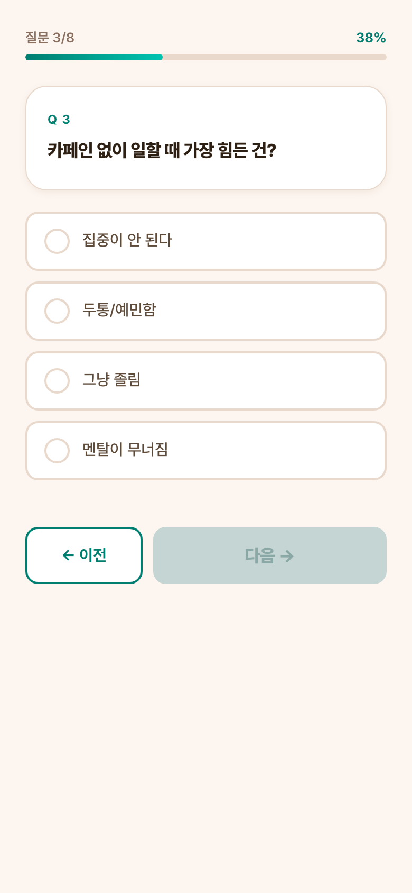

STAGE 01~02 · CONTENT STRATEGY
검색 전에 이미
불편함을 자각시킵니다.
광고처럼 보이면 스킵됩니다. 공감 콘텐츠로 일상에 스며들어 루틴의 빈자리를 먼저 만드는 것이 전략입니다. 직접 기획·제작한 두 가지 주력 콘텐츠를 소개합니다.
🎬 숏폼 GIF 기획 — 문제 인식 콘텐츠
가족·지인의 시선에서 공감을 이끌어 자각을 유도하는 4편 시리즈. 직접 기획.
아내가 먼저 알아챘다
오후 3시, 또 커피를 찾다

방관자에서 당사자로 (아내 시선)
혼자 짊어지는 피로
- 소구 방식: 직접 광고 X, 일상 공감 O — 알고리즘 확산 설계
- 이중 타겟: 30대 직장인 남성 + 배우자 여성 동시 유입
- KPI: 저장·공유율, "나 이거인데" 자발 호응 댓글 비율
📱 바이럴 심리테스트 — "내 피로는 어떤 타입?"
8문항 · 5개 결과 유형 · 직접 기획 및 제작 · 카카오 공유 구조 연동. 아래 클릭 시 바로 체험!




▶ 지금 바로 피로 유형 테스트 체험하기
8문항 · 약 2분 · 실제 제작 완료 · 뉴칸 루틴 처방 제공
→
- 결과 분기: Type A~E별 맞춤 '2주 뉴칸 루틴' 처방 제공
- 바이럴 설계: 결과 → 카카오링크 공유 → 지인 유입 순환
- KPI 목표: 시작 전환 80% · 완료율 70% · 카카오 공유율 10%
🌐 탐색 구간 인지 선점 — 블로그 SEO · 유튜브 브이로그
고객이 검색하기 전에 이미 뉴칸을 알고 있는 상태를 만드는 '미리 스며들기' 전략
네이버 파워블로그 (SEO 공략)
타겟 키워드: 직장인 영양제 추천 · 카페인 대체 · 아침 루틴
영양제 · 한 알 영양제
"오후만 되면 피로가 몰려와서 커피를 또 찾았는데, 한 달 전부터
뉴칸 맨즈업으로 바꿔봤어요."
- 실사용 리뷰 포맷으로 광고 필터 우회
- 키워드 상위 노출 → 비교 탐색 단계 선점
유튜브 브이로그 제휴 (일상 노출)
타겟 키워드: 직장인 브이로그 · 건강 루틴 · 30대 자기관리 ·
데일리 루틴
"요즘 아침에 커피 대신 뉴칸 챙겨먹기 시작했는데, 오후에 덜
피곤한 것 같아요."
(효능 단정·타사 직접 비교 표현 금지)
(효능 단정·타사 직접 비교 표현 금지)
- 광고 아닌 일상 콘텐츠로 자연 노출 설계
- 알고리즘 추천 → 비의도적 인지 확산